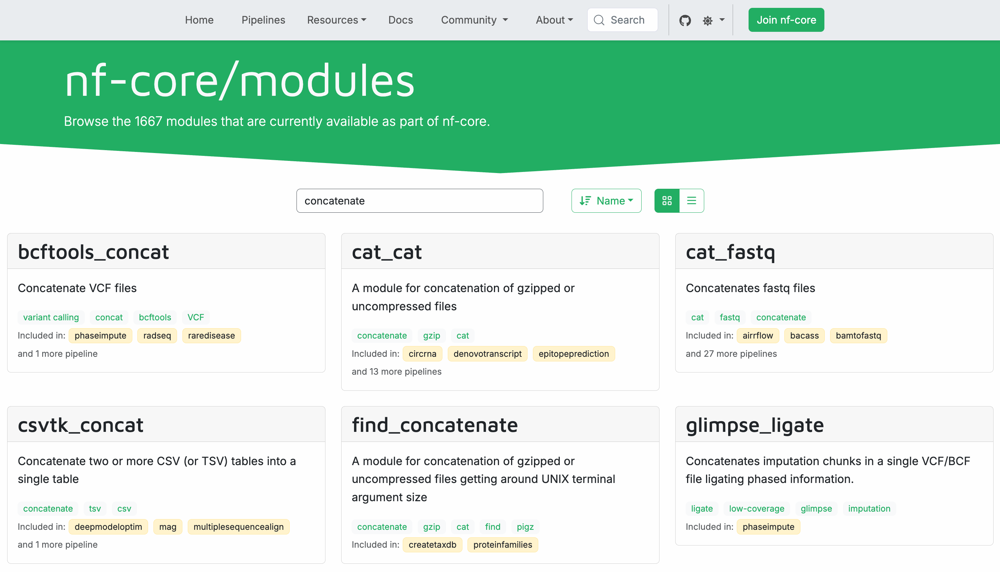

Bölüm 3: Bir nf-core modülü kullanma¶
Yapay zeka destekli çeviri - daha fazla bilgi ve iyileştirme önerileri
Hello nf-core eğitim kursunun bu üçüncü bölümünde, mevcut bir nf-core modülünü nasıl bulacağınızı, kuracağınızı ve pipeline'ınızda kullanacağınızı gösteriyoruz.
nf-core ile çalışmanın en büyük avantajlarından biri, nf-core/modules deposundan önceden oluşturulmuş ve test edilmiş modüllerden yararlanabilmektir. Her süreci sıfırdan yazmak yerine, en iyi uygulamaları takip eden topluluk tarafından sürdürülen modülleri kurabilir ve kullanabilirsiniz.
Bunun nasıl çalıştığını göstermek için, core-hello pipeline'ındaki özel collectGreetings modülünü nf-core/modules'ten cat/cat modülü ile değiştireceğiz.
Bu bölümden nasıl başlanır
Kursun bu bölümü, Bölüm 2: Hello'yu nf-core için yeniden yazma bölümünü tamamladığınızı ve çalışan bir core-hello pipeline'ına sahip olduğunuzu varsayar.
Bölüm 2'yi tamamlamadıysanız veya bu bölüm için yeni başlamak istiyorsanız, core-hello-part2 çözümünü başlangıç noktanız olarak kullanabilirsiniz.
hello-nf-core/ dizini içinden şu komutu çalıştırın:
Bu, modül eklemeye hazır tamamen işlevsel bir nf-core pipeline'ı sağlar. Aşağıdaki komutu çalıştırarak başarıyla çalıştığını test edebilirsiniz:
1. Uygun bir nf-core modülü bulma ve kurma¶
İlk olarak, mevcut bir nf-core modülünü nasıl bulacağımızı ve pipeline'ımıza nasıl kuracağımızı öğrenelim.
collectGreetings sürecini değiştirmeyi hedefliyoruz. Bu süreç, birden fazla selamlama dosyasını tek bir dosyada birleştirmek için Unix cat komutunu kullanıyor.
Dosyaları birleştirmek çok yaygın bir işlemdir, bu nedenle bu amaç için nf-core'da zaten tasarlanmış bir modül olması mantıklıdır.
Hadi başlayalım.
1.1. nf-core web sitesinde mevcut modüllere göz atma¶
nf-core projesi, https://nf-co.re/modules adresinde merkezi bir modül kataloğu tutar.
Web tarayıcınızda modüller sayfasına gidin ve 'concatenate' aramak için arama çubuğunu kullanın.

Gördüğünüz gibi, birçok sonuç var ve bunların çoğu çok spesifik dosya türlerini birleştirmek için tasarlanmış modüller.
Bunlar arasında, genel amaçlı olan cat_cat adlı bir modül görmelisiniz.
Modül adlandırma kuralı
Alt çizgi (_) karakteri, modül adlarında eğik çizgi (/) karakterinin yerine kullanılır.
nf-core modülleri, bir araç birden fazla komut sağladığında yazılım/komut adlandırma kuralını takip eder; örneğin samtools/view (samtools paketi, view komutu) veya gatk/haplotypecaller (GATK paketi, HaplotypeCaller komutu).
Yalnızca bir ana komut sağlayan araçlar için modüller fastqc veya multiqc gibi tek seviyeli isimler kullanır.
Modül belgelerini görüntülemek için cat_cat modül kutusuna tıklayın.
Modül sayfası şunları gösterir:
- Kısa bir açıklama: "A module for concatenation of gzipped or uncompressed files"
- Kurulum komutu:
nf-core modules install cat/cat - Girdi ve çıktı kanal yapısı
- Mevcut parametreler
1.2. Komut satırından mevcut modülleri listeleme¶
Alternatif olarak, nf-core araçlarını kullanarak doğrudan komut satırından modülleri de arayabilirsiniz.
Bu, nf-core/modules deposundaki tüm mevcut modüllerin bir listesini görüntüler; ancak aradığınız modülün adını önceden bilmiyorsanız biraz daha az kullanışlıdır.
Bununla birlikte, adını biliyorsanız listeyi belirli modülleri bulmak için grep'e yönlendirebilirsiniz:
Unutmayın ki grep yaklaşımı yalnızca adında arama terimi olan sonuçları çeker; bu nedenle cat_cat için işe yaramaz.
1.3. Modül hakkında ayrıntılı bilgi alma¶
Komut satırından belirli bir modül hakkında ayrıntılı bilgi görmek için info komutunu kullanın:
Bu, modül hakkında girdileri, çıktıları ve temel kullanım bilgileri dahil olmak üzere belgeleri görüntüler.
Komut çıktısı
,--./,-.
___ __ __ __ ___ /,-._.--~\
|\ | |__ __ / ` / \ |__) |__ } {
| \| | \__, \__/ | \ |___ \`-._,-`-,
`._,._,'
nf-core/tools version 3.5.2 - https://nf-co.re
╭─ Module: cat/cat ─────────────────────────────────────────────────╮
│ 🌐 Repository: https://github.com/nf-core/modules.git │
│ 🔧 Tools: cat │
│ 📖 Description: A module for concatenation of gzipped or │
│ uncompressed files │
╰────────────────────────────────────────────────────────────────────╯
╷ ╷
📥 Inputs │Description │Pattern
╺━━━━━━━━━━━━━━━━━┿━━━━━━━━━━━━━━━━━━━━━━━━━━━━━━━━━━━━━━━━━━┿━━━━━━━╸
input[0] │ │
╶─────────────────┼──────────────────────────────────────────┼───────╴
meta (map) │Groovy Map containing sample information │
│e.g. [ id:'test', single_end:false ] │
╶─────────────────┼──────────────────────────────────────────┼───────╴
files_in (file)│List of compressed / uncompressed files │ *
╵ ╵
╷ ╷
📥 Outputs │Description │ Pattern
╺━━━━━━━━━━━━━━━━━━━━━┿━━━━━━━━━━━━━━━━━━━━━━━━━━━━━━━━━┿━━━━━━━━━━━━╸
file_out │ │
╶─────────────────────┼─────────────────────────────────┼────────────╴
meta (map) │Groovy Map containing sample │
│information │
╶─────────────────────┼─────────────────────────────────┼────────────╴
${prefix} (file) │Concatenated file. Will be │ ${file_out}
│gzipped if file_out ends with │
│".gz" │
╶─────────────────────┼─────────────────────────────────┼────────────╴
versions_cat │ │
╶─────────────────────┼─────────────────────────────────┼────────────╴
versions_cat (tuple)│Software version information │
╵ ╵
💻 Installation command: nf-core modules install cat/cat
Bu, web sitesinde bulabileceğiniz bilgilerin tamamen aynısıdır.
1.4. cat/cat modülünü kurma¶
Artık istediğimiz modülü bulduğumuza göre, onu pipeline'ımızın kaynak koduna eklememiz gerekiyor.
İyi haber şu ki nf-core projesi bunu kolaylaştıran bazı araçlar içeriyor.
Özellikle, nf-core modules install komutu, kodu almayı ve projenizde kullanılabilir hale getirmeyi tek adımda otomatikleştirmeyi mümkün kılar.
Pipeline dizininize gidin ve kurulum komutunu çalıştırın:
Araç modülü kurmaya devam edecektir.
Komut çıktısı
,--./,-.
___ __ __ __ ___ /,-._.--~\
|\ | |__ __ / ` / \ |__) |__ } {
| \| | \__, \__/ | \ |___ \`-._,-`-,
`._,._,'
nf-core/tools version 3.5.2 - https://nf-co.re
INFO Installing 'cat/cat'
INFO Use the following statement to include this module:
include { CAT_CAT } from '../modules/nf-core/cat/cat/main'
Komut otomatik olarak:
- Modül dosyalarını
modules/nf-core/cat/cat/dizinine indirir - Kurulu modülü izlemek için
modules.jsondosyasını günceller - Workflow'unuzda kullanmak için doğru
includeifadesini size sağlar
İpucu
Modül kurulum komutunu çalıştırmadan önce geçerli çalışma dizininizin pipeline projenizin kök dizini olduğundan emin olun.
Modülün doğru şekilde kurulduğunu kontrol edelim:
Dizin içeriği
Ayrıca nf-core yardımcı programına yerel olarak kurulu modülleri listelemesini söyleyerek kurulumu doğrulayabilirsiniz:
Komut çıktısı
INFO Repository type: pipeline
INFO Modules installed in '.':
┏━━━━━━━━━━━━━┳━━━━━━━━━━━━━━━━━┳━━━━━━━━━━━━━┳━━━━━━━━━━━━━━━━━━━━━━━━━━━━━━━━━━━━━━━━┳━━━━━━━━━━━━┓
┃ Module Name ┃ Repository ┃ Version SHA ┃ Message ┃ Date ┃
┡━━━━━━━━━━━━━╇━━━━━━━━━━━━━━━━━╇━━━━━━━━━━━━━╇━━━━━━━━━━━━━━━━━━━━━━━━━━━━━━━━━━━━━━━━╇━━━━━━━━━━━━┩
│ cat/cat │ nf-core/modules │ 41dfa3f │ update meta.yml of all modules (#8747) │ 2025-07-07 │
└─────────────┴─────────────────┴─────────────┴────────────────────────────────────────┴────────────┘
Bu, cat/cat modülünün artık projenizin kaynak kodunun bir parçası olduğunu doğrular.
Ancak, yeni modülü gerçekten kullanmak için onu pipeline'ımıza aktarmamız gerekiyor.
1.5. Modül içe aktarmalarını güncelleme¶
workflows/hello.nf workflow'unun içe aktarma bölümünde collectGreetings modülü için olan include ifadesini CAT_CAT için olan ifade ile değiştirelim.
Hatırlatma olarak, modül kurulum aracı bize kullanacağımız tam ifadeyi verdi:
include { CAT_CAT } from '../modules/nf-core/cat/cat/main'
nf-core kuralının modülleri içe aktarırken büyük harf kullanmak olduğunu unutmayın.
core-hello/workflows/hello.nf dosyasını açın ve aşağıdaki değişikliği yapın:
nf-core modülü için yolun yerel modüllerden nasıl farklı olduğuna dikkat edin:
- nf-core modülü:
'../modules/nf-core/cat/cat/main'(main.nfdosyasına referans verir) - Yerel modül:
'../modules/local/collectGreetings.nf'(tek dosya referansı)
Modül artık workflow için kullanılabilir; tek yapmamız gereken collectGreetings çağrısını CAT_CAT kullanacak şekilde değiştirmek. Değil mi?
O kadar kolay değil.
Bu noktada, koda dalıp düzenlemeye başlamak cazip gelebilir; ancak yeni modülün ne beklediğini ve ne ürettiğini dikkatlice incelemek için bir an ayırmaya değer.
Bunu ayrı bir bölüm olarak ele alacağız çünkü henüz ele almadığımız yeni bir mekanizma içeriyor: metadata map'leri (metamap'ler).
Not
İsteğe bağlı olarak collectGreetings.nf dosyasını silebilirsiniz:
Ancak, yerel ve nf-core modülleri arasındaki farkları anlamak için referans olarak saklamak isteyebilirsiniz.
Özet¶
Bir nf-core modülünü nasıl bulacağınızı ve projenizde kullanılabilir hale getireceğinizi biliyorsunuz.
Sırada ne var?¶
Yeni bir modülün ne gerektirdiğini değerlendirin ve onu bir pipeline'a entegre etmek için gereken önemli değişiklikleri belirleyin.
2. Yeni modülün gereksinimlerini değerlendirme¶
Özellikle, modülün arayüzünü, yani girdi ve çıktı tanımlarını incelememiz ve değiştirmeye çalıştığımız modülün arayüzüyle karşılaştırmamız gerekiyor. Bu, yeni modülü doğrudan yerine geçecek bir modül olarak kullanıp kullanamayacağımızı veya kablolamada bazı uyarlamalar yapmamız gerekip gerekmediğini belirlememizi sağlayacaktır.
İdeal olarak bu, modülü kurmadan önce yapmanız gereken bir şeydir; ama hiç olmamasından iyidir.
(Değeri bilinsin ki, artık istemediğinize karar verdiğiniz modüllerden kurtulmak için bir uninstall komutu vardır.)
Not
CAT_CAT süreci, farklı sıkıştırma türleri, dosya uzantıları ve benzeri konularla ilgili oldukça akıllı bir işleme içerir; bunlar burada size göstermeye çalıştığımız şeyle doğrudan alakalı değil, bu yüzden çoğunu görmezden geleceğiz ve yalnızca önemli olan kısımlara odaklanacağız.
2.1. İki modülün arayüzlerini karşılaştırma¶
Hatırlatma olarak, collectGreetings modülümüzün arayüzü şöyle görünüyor:
| modules/local/collectGreetings.nf (alıntı) | |
|---|---|
collectGreetings modülü iki girdi alır:
input_files, işlenecek bir veya daha fazla girdi dosyası içerir;batch_name, çıktı dosyasına çalıştırmaya özgü bir ad atamak için kullandığımız bir değerdir; bu bir metadata biçimidir.
Tamamlandığında, collectGreetings outfile etiketi ile yayınlanan tek bir dosya yolu çıktılar.
Karşılaştırmalı olarak, cat/cat modülünün arayüzü daha karmaşıktır:
CAT_CAT modülü tek bir girdi alır; ancak bu girdi iki şey içeren bir demettir:
meta, metamap adı verilen metadata içeren bir yapıdır;files_in,collectGreetings'ininput_files'ına eşdeğer olan, işlenecek bir veya daha fazla girdi dosyası içerir.
Tamamlandığında, CAT_CAT çıktılarını iki kısımda sunar:
- Metamap ve birleştirilmiş çıktı dosyasını içeren başka bir demet,
file_outetiketi ile yayınlanır; - Yazılım sürümü takibi için
versionskonu kanalına yayınlanan bir sürüm demeti.
Ayrıca varsayılan olarak çıktı dosyasının metadata'nın bir parçası olan bir tanımlayıcıya göre adlandırılacağını unutmayın (kod burada gösterilmemiştir).
Sadece koda bakarak bunları takip etmek çok fazla gibi görünebilir, bu yüzden her şeyin nasıl bir araya geldiğini görselleştirmenize yardımcı olacak bir diyagram burada:
İki modülün içerik açısından benzer girdi gereksinimlerine sahip olduğunu (bir dizi girdi dosyası artı bazı metadata) ancak bu içeriğin nasıl paketleneceği konusunda çok farklı beklentileri olduğunu görebilirsiniz. Sürüm çıktısını şimdilik görmezden gelecek olursak, ana çıktıları da eşdeğerdir (birleştirilmiş bir dosya); ancak CAT_CAT ayrıca çıktı dosyasıyla birlikte metamap'i de yayınlar.
Birazdan göreceğiniz gibi, paketleme farklarıyla başa çıkmak oldukça kolay olacak. Ancak, metamap kısmını anlamak için size biraz ek bağlam sunmamız gerekiyor.
2.2. Metamap'leri anlama¶
Size CAT_CAT modülünün girdi demetinin bir parçası olarak bir metadata map beklediğini söyledik. Bunun ne olduğuna daha yakından bakmak için birkaç dakika ayıralım.
Metadata map, genellikle kısaca metamap olarak adlandırılır; veri birimleri hakkında bilgi içeren Groovy tarzı bir map'tir. Nextflow pipeline'ları bağlamında, veri birimleri istediğiniz herhangi bir şey olabilir: bireysel örnekler, örnek grupları veya tüm veri kümeleri.
Geleneksel olarak, bir nf-core metamap'i meta olarak adlandırılır ve çıktıları adlandırmak ile veri birimlerini izlemek için kullanılan gerekli id alanını içerir.
Örneğin, tipik bir metadata map şöyle görünebilir:
Veya metadata'nın batch seviyesinde eklendiği bir durumda:
Şimdi bunu CAT_CAT süreci bağlamına koyalım; bu süreç girdi dosyalarının bir metamap ile bir demet halinde paketlenmesini bekler ve çıktı demetinin bir parçası olarak metamap'i de çıktılar.
| modules/nf-core/cat/cat/main.nf (alıntı) | |
|---|---|
Sonuç olarak, her veri birimi ilgili metadata eklenmiş olarak pipeline üzerinden ilerler. Sonraki süreçler de bu metadata'ya kolayca erişebilir.
Size CAT_CAT tarafından çıktılanan dosyanın metadata'nın bir parçası olan bir tanımlayıcıya göre adlandırılacağını söylediğimizi hatırlıyor musunuz?
İlgili kod şudur:
| modules/nf-core/cat/cat/main.nf (alıntı) | |
|---|---|
Bu kabaca şu anlama gelir: eğer harici görev parametre sistemi (task.ext) aracılığıyla bir prefix sağlanırsa, çıktı dosyasını adlandırmak için onu kullan; aksi takdirde metamap'teki id alanına karşılık gelen ${meta.id} kullanarak bir tane oluştur.
Bu modüle gelen girdi kanalının şöyle içeriklerle geldiğini hayal edebilirsiniz:
ch_input = [[[id: 'batch1', date: '25.10.01'], ['file1A.txt', 'file1B.txt']],
[[id: 'batch2', date: '25.10.26'], ['file2A.txt', 'file2B.txt']],
[[id: 'batch3', date: '25.11.14'], ['file3A.txt', 'file3B.txt']]]
Ardından çıkan çıktı kanalı içeriği şöyle çıkar:
ch_input = [[[id: 'batch1', date: '25.10.01'], 'batch1.txt'],
[[id: 'batch2', date: '25.10.26'], 'batch2.txt'],
[[id: 'batch3', date: '25.11.14'], 'batch3.txt']]
Daha önce de belirtildiği gibi, tuple val(meta), path(files_in) girdi kurulumu tüm nf-core modüllerinde kullanılan standart bir modeldir.
Umarım bunun ne kadar yararlı olabileceğini görmeye başlıyorsunuzdur. Sadece metadata'ya göre çıktıları adlandırmanıza izin vermekle kalmaz; aynı zamanda farklı parametre değerlerini uygulamak gibi şeyler de yapabilirsiniz ve belirli operatörlerle kombinasyon halinde, pipeline üzerinden akarken verileri gruplayabilir, sıralayabilir veya filtreleyebilirsiniz.
Metadata hakkında daha fazla bilgi
Nextflow workflow'larında metadata ile çalışma hakkında, samplesheet'lerden metadata okuma ve işlemeyi özelleştirmek için nasıl kullanılacağı dahil olmak üzere kapsamlı bir giriş için Workflow'larda metadata yan görevine bakın.
2.3. Yapılacak değişiklikleri özetleme¶
İncelediklerimize dayanarak, cat/cat modülünü kullanmak için pipeline'ımızda yapmamız gereken ana değişiklikler şunlardır:
- Batch adını içeren bir metamap oluşturma;
- Metamap'i birleştirilecek girdi dosyaları kümesiyle bir demet halinde paketleme (
convertToUpper'dan çıkan); - Çağrıyı
collectGreetings()'tenCAT_CAT'e değiştirme; CAT_CATsüreci tarafından üretilen demetten çıktı dosyasınıcowpy'ye geçirmeden önce çıkarma.
Bu işe yaramalı! Artık bir planımız olduğuna göre, dalmaya hazırız.
Özet¶
Yeni bir modülün girdi ve çıktı arayüzünü gereksinimlerini belirlemek için nasıl değerlendireceğinizi biliyorsunuz; ayrıca metamap'lerin nf-core pipeline'ları tarafından metadata'yı pipeline üzerinden akarken verilerle yakından ilişkili tutmak için nasıl kullanıldığını öğrendiniz.
Sırada ne var?¶
Yeni modülü bir workflow'a entegre edin.
3. CAT_CAT'i hello.nf workflow'una entegre etme¶
Artık metamap'ler hakkında her şeyi bildiğinize göre (veya en azından bu kursun amaçları için yeterince), yukarıda özetlediğimiz değişiklikleri gerçekten uygulamanın zamanı geldi.
Netlik adına, bunu parçalara ayıracağız ve her adımı ayrı ayrı ele alacağız.
Not
Aşağıda gösterilen tüm değişiklikler core-hello/workflows/hello.nf workflow dosyasındaki main bloğundaki workflow mantığına yapılır.
3.1. Bir metadata map oluşturma¶
İlk olarak, nf-core modüllerinin metamap'in en azından bir id alanı içermesini gerektirdiğini aklımızda tutarak, CAT_CAT için bir metadata map oluşturmamız gerekiyor.
Başka metadata'ya ihtiyacımız olmadığından, basit tutabilir ve şöyle bir şey kullanabiliriz:
Ancak id değerini sabit kodlamak istemiyoruz; params.batch parametresinin değerini kullanmak istiyoruz.
Yani kod şöyle olur:
Evet, temel bir metamap oluşturmak kelimenin tam anlamıyla bu kadar basit.
Bu satırları convertToUpper çağrısından sonra ekleyelim ve collectGreetings çağrısını kaldıralım:
Bu, id'nin batch adımıza (test profilini kullanırken test olacaktır) ayarlandığı basit bir metadata map oluşturur.
3.2. Metadata demetleri içeren bir kanal oluşturma¶
Ardından, dosya kanalını metadata ve dosyalar içeren demet kanalına dönüştürün:
Eklediğimiz satır iki şey başarır:
.collect(),convertToUpperçıktısından tüm dosyaları tek bir listede toplar.map { files -> tuple(cat_meta, files) },CAT_CAT'in beklediği formatta[metadata, dosyalar]demeti oluşturur
CAT_CAT için girdi demetini kurmak için yapmamız gereken tek şey bu.
3.3. CAT_CAT modülünü çağırma¶
Şimdi yeni oluşturulan kanal üzerinde CAT_CAT'i çağırın:
Bu, değiştirmenin en karmaşık kısmını tamamlar; ancak henüz bitirmedik: birleştirilmiş çıktıyı cowpy sürecine nasıl ileteceğimizi güncellememiz gerekiyor.
3.4. cowpy için çıktı dosyasını demetten çıkarma¶
Daha önce, collectGreetings süreci doğrudan cowpy'ye aktarabileceğimiz bir dosya üretiyordu.
Ancak, CAT_CAT süreci çıktı dosyasına ek olarak metamap'i de içeren bir demet üretir.
cowpy henüz metadata demetlerini kabul etmediğinden (bunu kursun sonraki bölümünde düzelteceğiz), CAT_CAT tarafından üretilen demetten çıktı dosyasını cowpy'ye vermeden önce çıkarmamız gerekiyor:
.map { meta, file -> file } işlemi, CAT_CAT tarafından üretilen [metadata, dosya] demetinden dosyayı yeni bir kanala, ch_for_cowpy'ye çıkarır.
Ardından o son satırda collectGreetings.out.outfile yerine ch_for_cowpy'yi cowpy'ye iletmek yeterlidir.
Not
Kursun sonraki bölümünde, cowpy'yi doğrudan metadata demetleriyle çalışacak şekilde güncelleyeceğiz; böylece bu çıkarma adımı artık gerekli olmayacak.
3.5. Workflow'u test etme¶
Workflow'un yeni entegre edilen cat/cat modülüyle çalıştığını test edelim:
Bu makul bir hızda çalışmalıdır.
Komut çıktısı
N E X T F L O W ~ version 25.04.3
Launching `./main.nf` [evil_pike] DSL2 - revision: b9e9b3b8de
Input/output options
input : /workspaces/training/hello-nf-core/core-hello/assets/greetings.csv
outdir : core-hello-results
Institutional config options
config_profile_name : Test profile
config_profile_description: Minimal test dataset to check pipeline function
Generic options
validate_params : false
trace_report_suffix : 2025-10-30_18-50-58
Core Nextflow options
runName : evil_pike
containerEngine : docker
launchDir : /workspaces/training/hello-nf-core/core-hello
workDir : /workspaces/training/hello-nf-core/core-hello/work
projectDir : /workspaces/training/hello-nf-core/core-hello
userName : root
profile : test,docker
configFiles : /workspaces/training/hello-nf-core/core-hello/nextflow.config
!! Only displaying parameters that differ from the pipeline defaults !!
------------------------------------------------------
executor > local (8)
[b3/f005fd] CORE_HELLO:HELLO:sayHello (3) [100%] 3 of 3 ✔
[08/f923d0] CORE_HELLO:HELLO:convertToUpper (3) [100%] 3 of 3 ✔
[34/3729a9] CORE_HELLO:HELLO:CAT_CAT (test) [100%] 1 of 1 ✔
[24/df918a] CORE_HELLO:HELLO:cowpy [100%] 1 of 1 ✔
-[core/hello] Pipeline completed successfully-
Süreç yürütme listesinde collectGreetings yerine artık CAT_CAT'in göründüğünü fark edin.
Ve hepsi bu kadar! Artık pipeline'daki bu adım için özel prototip düzeyinde kod yerine sağlam, topluluk tarafından düzenlenen bir modül kullanıyoruz.
Özet¶
Artık nasıl yapılacağını biliyorsunuz:
- nf-core modüllerini bulma ve kurma
- Bir nf-core modülünün gereksinimlerini değerlendirme
- Bir nf-core modülüyle kullanmak için basit bir metadata map oluşturma
- Bir nf-core modülünü workflow'unuza entegre etme
Sırada ne var?¶
Yerel modüllerinizi nf-core kurallarına uyacak şekilde nasıl uyarlayacağınızı öğrenin. Ayrıca nf-core araçlarını kullanarak bir şablondan yeni nf-core modülleri nasıl oluşturacağınızı da göstereceğiz.